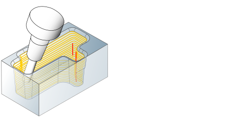
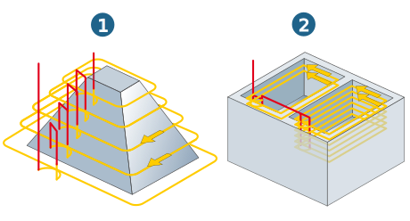
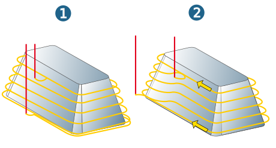
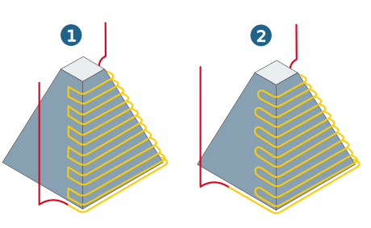
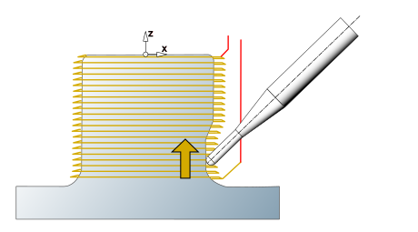

Z Level Finishing
Machining a plane or pocket of steep surfaces with smooth transitions between the machining levels.
|  |
Strategy
Machining sequence
Plane (1): Machining is carried out level by level. The selected approach and retract macros are executed in each plane.
Pocket (2): Contour pockets or islands are machined in sequence.
If there are several boundaries, these are machined in sequence. If a user-defined plunge point is also present, machining only takes place within the related boundary. In addition, select cutting mode and infeed mode.
The vertical infeed (stepdown) is carried out level by level. In each Z-level the selected approach and retract macros will be executed. In addition, select cutting mode and infeed mode.
|  |
Prefer spiral: Machining is performed in one continuous toolpath with a complete (1) or an approximate spiral-shaped (2) vertical stepdown. Macros are only carried out at the start and the end of the path. In addition, select the cutting mode. Slope dependent machining is not available for spiral-shaped infeed.
Zigzag (3): Machining with alternating cutting mode.
|  |
Connect strategy
Ramp connect: Level-by-level machining with ramp-shaped, filleted stepdown between the levels. The last toolpath will be closed. Advantage compared to the complete spiral machining is the shorter calculation time while obtaining the same surface quality results.
Connect factor: Defines the length of the ramp as follows: Ramp length = Tool diameter x Factor. This value should be set with consideration of the stepdown distance and the machine kinematics. If the connect factor is 0, infeed takes place in a complete spiral-shaped vertical path.
The first and last toolpaths are machined as closed paths in one level. Between these there will be a spiral-shaped toolpath.
Zigzag: Machining with alternating orientation. The selected approach and retract macros are executed for the approach of the first NC path and the retraction from the last passed NC path.
If a Return macro is activated, every retract and infeed movement is corrected by the selected retract and approach macro.
Infeed mode
The infeed mode applies to the vertical stepdown to the next workplane within a machining area.
Rapid: A rapid retract movement to the clearance distance/plane takes place between the approach and retract macros of the two machining planes. Always applies when multiple pockets are machined during level-by-level machining.
Direct (1): The infeed movement from the end point of the retract macro to the start point of the approach macro is carried out on the shortest path at the feedrate.
Smooth (2): The stepdown between the end position of the retract macro and the start point of the approach macro are filleted (rounded).
If this infeed mode is used in combination with circular approach and retract macros, the result will be a helical transition between the toolpaths. Such loop-shaped paths reduce jolting and mechanical load on the machine.
|  |
Cutting mode
Climb milling, Conventional milling: In the case of contour-parallel machining with continuous orientation, the following definitions apply: climb milling and conventional milling relate to clockwise rotating tools. To perform climb milling with an anticlockwise rotating tool, select conventional milling. For climb milling with tools rotating clockwise, the following machining directions apply:
(1) Outside machining in clockwise direction.
(2) Inside machining in counterclockwise direction.
 |
Toolpath fillets
Fillet interior corners: Smooth filleting (rounding) of internal milling paths at the corners of contour pockets or islands.
Fillet radius: Abrupt changes in direction within the cutting toolpaths are rounded with the specified radius.
Machining mode
Slope mode: During Z Level Finishing, the machining of surfaces with a small slope angle only leads to unsatisfactory quality (a lot of rest material). To save time, these surfaces can be optionally excluded from machining, in dependence on their slope.
Slope dependent machining is only possible with bullnose end mills and ball mills, and cannot be used in conjunction with a spiral strategy.
Slope angle: Enter the minimum surface slope angle. Only those areas will be machined which have a larger slope angle.
The flat areas not machined here can be machined with the 3D Finishing cycle in slope mode. There the steep surface areas are excluded from machining.
Options
Bottom to top milling: Activate when machining is to take place from bottom to top.
|  |